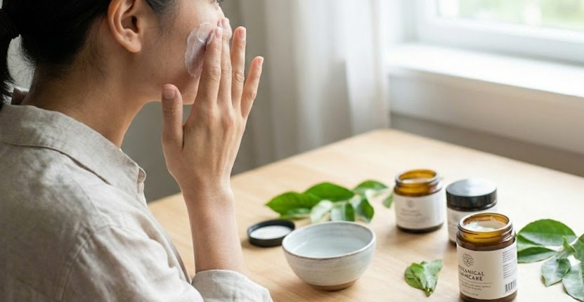

「当日、一番きれいな私」になるために
結婚式の準備期間は、楽しみと同じくらい、ストレスや不安が押し寄せる時期でもあります。寝不足や緊張は、すぐに肌の「ゆらぎ」として現れます。
そんなデリケートな時期の花嫁様にこそ、オーガニックケアをおすすめします。植物の香りは張り詰めた神経を緩め、優しい成分は疲れが見える肌を穏やかに整えてくれます。「きれいにならなきゃ」というプレッシャーを、「自分をいたわる時間」に変えてみませんか？
朝、鏡の前で肌に触れたとき「あ、もっちりしてる」と感じる小さな喜びが、挙式当日の自信に繋がります。オーガニックコスメは、花嫁の心強いパートナーなのです。
「崩れない肌」を作る自活力
オーガニック成分で「バリア機能」を高めておくことは、当日の化粧崩れを防ぐ最強の下準備です。
肌の水分と油分のバランスが整っていると、ファンデーションがピタッと密着し、時間が経っても美しいツヤ肌をキープできます。
「与えるケア」より「育てるケア」へ。
毎日のクレンジングや保湿で肌の基礎力を底上げしておけば、エステに頼りすぎなくても、内側から発光するような美しさが手に入ります。
例えば、オーガニックローションで水分を巡らせ、オイルで蓋をする。このシンプルな積み重ねが、写真にも映える「透明感」を作ります。
🍽️ あなたの「好物」でバレる！？
肌トラブル診断
スキンケアをしているのに肌荒れが治らない…
それは「無意識に食べているもの」が原因かもしれません。
当てはまるものをタップしてチェック！
🍰 甘いもの（ケーキ・チョコ）が大好き
診断：脂性肌～混合肌（ニキビ・黄ぐすみ）
糖質の摂りすぎはTゾーンのベタつきや、肌が黄色くくすむ「糖化」の原因に。ハリの低下にも要注意です。
👉 おすすめケア：低GIのナッツをおやつにするか、食事で血糖値を急上昇させない工夫を。
🌶️ 辛いもの（唐辛子など）が大好き
診断：脂性肌～敏感肌（炎症リスク）
発汗作用で皮脂が増えるほか、刺激で肌の赤みや炎症を引き起こしやすくなっています。
👉 おすすめケア：抗酸化作用のあるトマトなどの野菜をたっぷり摂って炎症を鎮火！
🍤 油っこいもの・スナックが大好き
診断：脂性肌（毛穴詰まり・ニキビ）
悪い油の摂りすぎは、そのままドロドロの皮脂となり毛穴を詰まらせます。酸化した油は肌老化の最大要因！
👉 おすすめケア：揚げ物を減らし、SONOKOのような「ノンオイル調理」で肌を休ませて。
🧂 味の濃いもの・塩辛いものが大好き
診断：乾燥肌～むくみ肌
塩分過多は体内の水分を奪い、肌の乾燥を招きます。同時に顔のむくみも引き起こすダブルパンチ。
👉 おすすめケア：カリウムを含む野菜や海藻を摂って、余分な塩分を排出しましょう。
食生活を変えるのは難しい…と思ったら、
まずは「1週間」プロに頼ってみませんか？